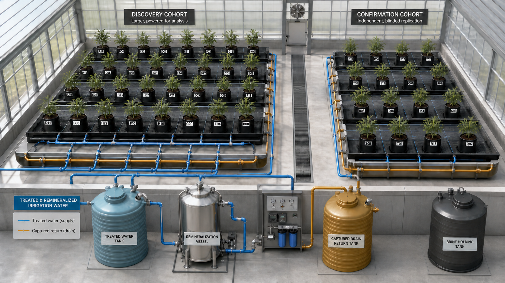

New design: blinded discovery and confirmation cohorts
The registered design is visible without exposing treatment identity to greenhouse staff: every pot carries a neutral opaque tag, the confirmation cohort is physically separate, and both cohorts use independently contained benches. Blue supply lines carry treated and remineralized irrigation; amber lines capture drainage; the brine vessel has no visible connection to the drain-return tank.
Concept only. This is neither a construction drawing nor evidence of biological efficacy.